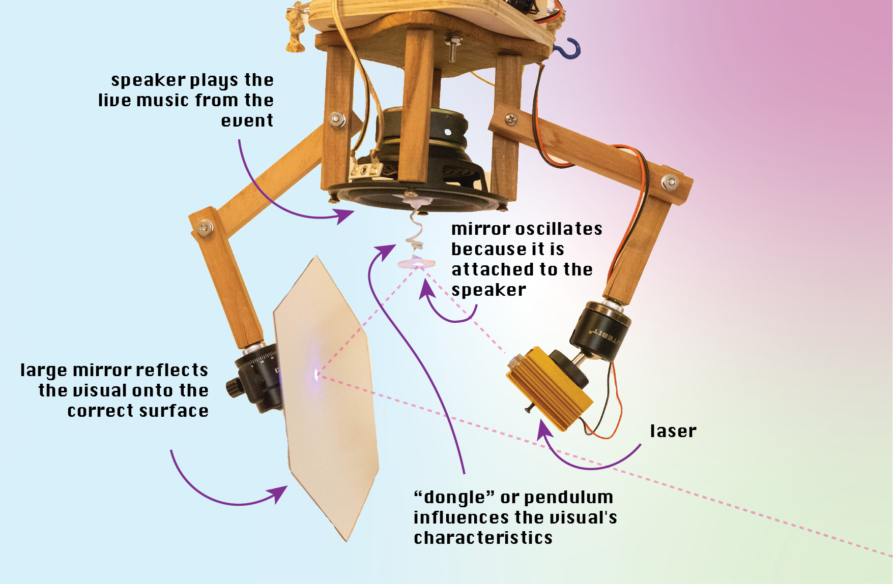
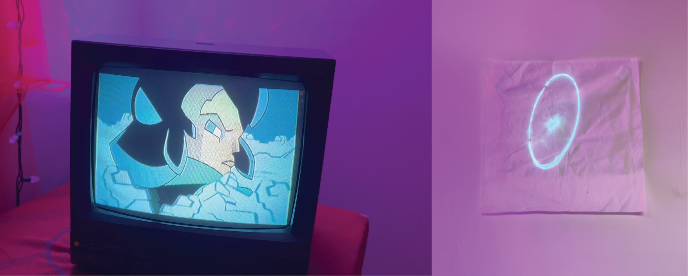
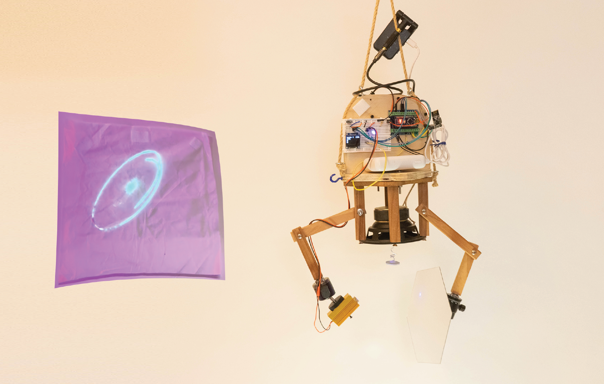
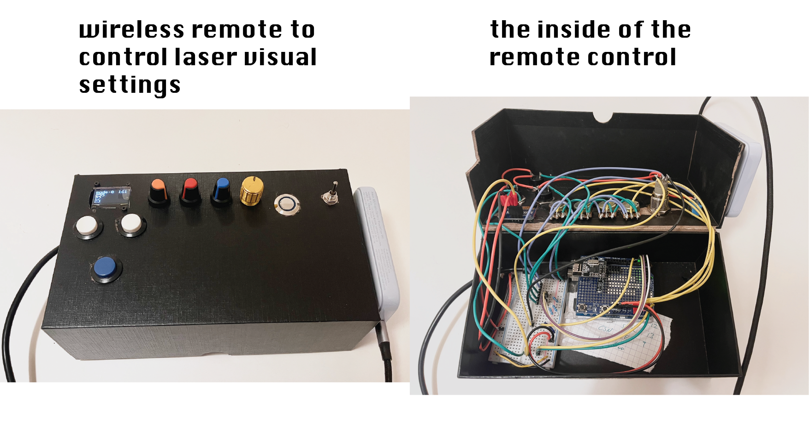
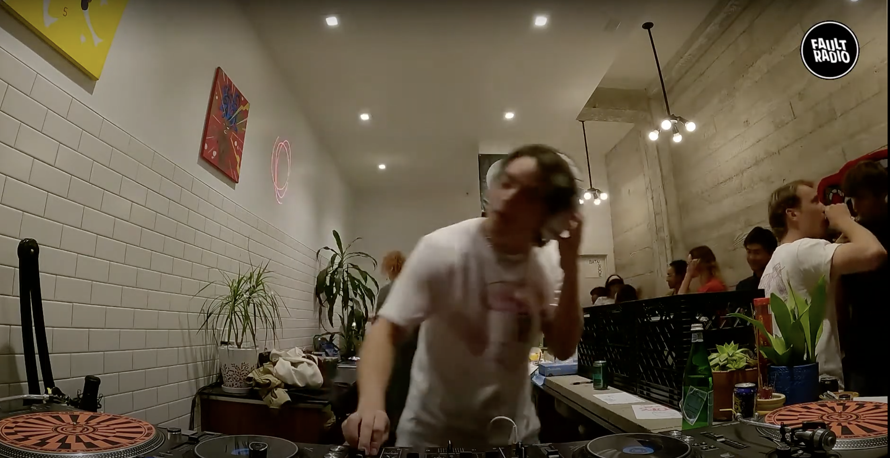
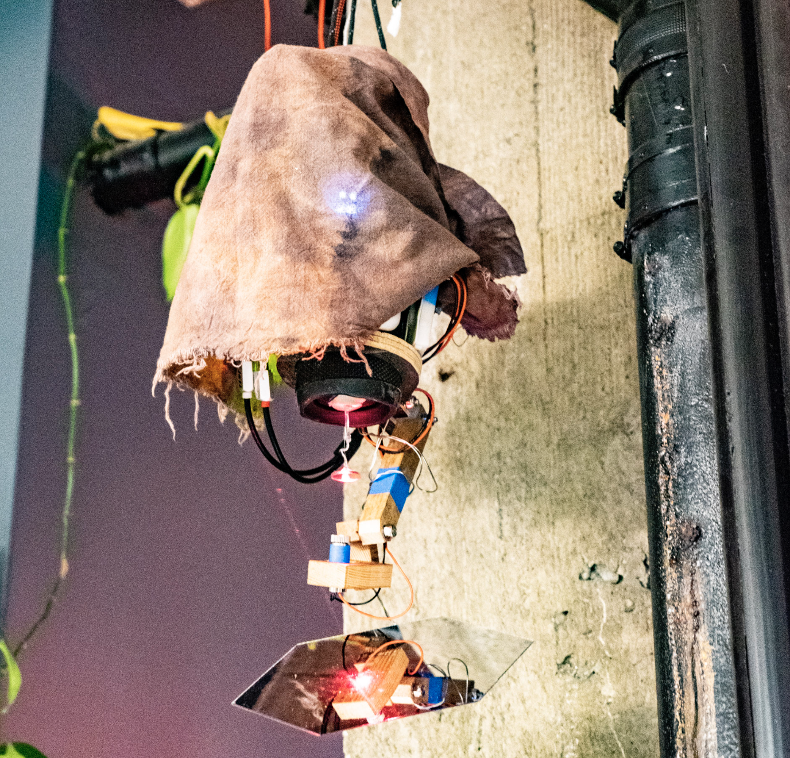

An overview for my “laser music visualizer”
I have been shaping this laser visualizer on and off for 3 years since its invention night with my friends at a Make Harvard hackathon (old presentation video here). This project has continuously pulled me in and excited friends and audiences because the visualization it produces is so distinct and different from projector- or LED-based visuals commonly installed in clubs & music spaces.
I enjoy that it is directly synced to the music and represents the real sound waves of the song. It does not use sofware to create the visual. The visual is created by the movement of the speaker and a mirror attached to it.
Check out this video to see one version of visuals it can create.
I greatly enjoy the patterns it creates and that the visuals are often distinct to a song or baseline. Every baseline feeling creates a different visual. Yet, the general style stays similar throughout the night, creating a pull-in hypnotic effect.
Videos showing a variety of visuals from different prototypes
Even though I mention prototype versions below, every system’s visual mostly depends on the dongle design. Refer to the image below to see what the dongle is.
- video showing the nice patterns & mechanical design & dongle: watch video here
- a video of prototype 2 using a violet/UV laser on a glow-in-the-dark canvas: watch video here
- a video of prototype 1 during a DJ performance, showing a very different characteristic due to a different “donlge” used: watch YouTube video here
- nice patterns from and video of prototype 1: watch video here
- more agressive interesting patterns: watch video here
The general mechanics-based concept to create visuals

Events where I installed the laser
Night market for the afro-futuristic comic book Quasar
I worked together with Gideon O Egbuchulam to shape the environment of a dance event and night market with the purpose to promote his new afro-futuristic comic book Quasar Soliders. The electronic & mechanical appearnace of the visualizer created a hacky, futuristic sci-fi experience that matched the aesthetic of the comic and animated video playing from an old TV.


I developed this second prototype to explore the effects of a glow-in-the-dark canvas that is charged up by the UV/purple laser. The effect is not as interesting as expected. The
videos of performance of V2
a video of the blue-light laser performing to a song: watch video here
a video of the laser when bass is low to illustrate that the momvement of the visual largely depends on low frequencesy: video here
design of V2: laser & wireless remote control
The biggest part of building the second prototype was the development of a fully wireless system. The visualizer can be controlled via a remote control that I built myself and the music signal is sent wirelessly, making installation and fine-tuning much easier.

Skiis DJing at Fault radio with laser visualizer in the background Sept 18 2022
This was a larger event with several DJs, vendors, and artist. In this YouTube video, Skiis DJs with the laser in the background. The laser’s movement in this video is particularly fun because it bounces around quite dynamically. I received enthusiam from a few people as they had never seen a visualizer that didn’t use a projector or screen before. 
The laser I used at this event was my first legit prototype (V1) using a commonly available JBL speaker and looked as follows:

Media archive
- folder with all images and videos besides youtube videos https://drive.google.com/drive/folders/1tR-mtjFpGnDntmnmfJzJfZR_EcrjVrzx?usp=sharing
- timelapse of hackathon https://www.youtube.com/watch?v=MxvMdnYlsK0
~ •• • •• ~
Does something bubble up for you?
Pin your ideas or thoughts here 📌
Anyone can interact here. This is my little communication experiment.
I'd love to hear from you!
License for all original work:

 ELECYT-LASER-VIZ-A
ELECYT-LASER-VIZ-A